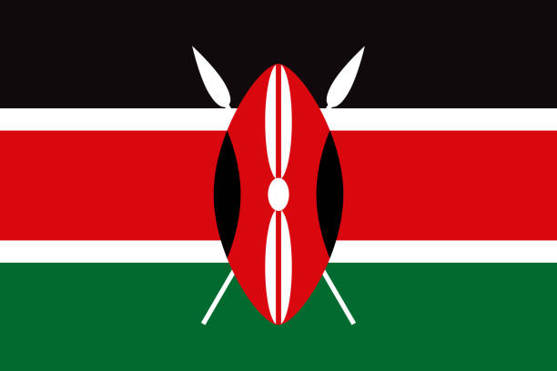

About Me
My name is Bettina, my friends call me Tina. I was born in Nairobi Kenya. I work as a Sales Development representative. I am married with one daughter. My hobbies are baking, watching good tv shows as well as playing with my daughter. I'm currently persuing a degree in web development at BYU-Idaho.
Nairobi Kenya
Nairobi, the capital city of Kenya, is a vibrant and bustling metropolis that offers a unique blend of modernity and rich cultural heritage. With its ever-growing skyline, diverse population, and an array of attractions, Nairobi has gained recognition as one of Africa’s most dynamic cities.Nairobi is proud to be the only city in the world with a national park. It is one of the town's top attractions. You can see wildlife while looking at the city skyline. There are Giraffes, Rhinos, Zebras, Lions, and Buffaloes in the park, which is made up of open grasslands.
Web Dev Resources
W3 SchoolsCSS-Tricks
Udemy